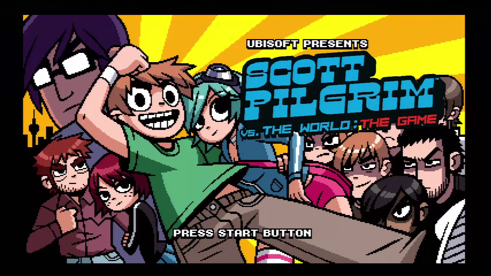

Descripción
Catacomb es un juego por oleadas de distintos tipo de enemigos. Controla a un gato (por si te lo estabas preguntando, sí, un furro).
Avanza de nivel, consigue colores y añádelos a tu espada. Derrota a los enemigos usando los colores.
Te encontrarás con nuevos enemigos a la vez que avanzas y las oleadas te lo pondrán cada vez más difícil. Deberás estar atento a los colores de tu enemigos, porque puede que les otorguen power-ups especiales.
Desarrolladores
- Pedro León Miranda
- Francisco Mollá Astrar
- Patricia Beatriz Rubia Luque
- María Sachez Carrasco
- Jianuo Wen Hu